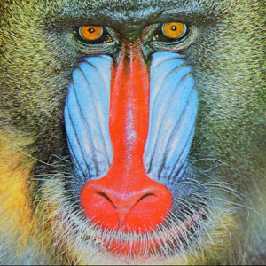

<!DOCTYPE html>
<html>
<meta charset="utf-8">
<style>
button {
  position: absolute;
  top: 10px;
  right: 10px;
  z-index: 1;
}
img { display: block; width: 100%; }
img.animated {
  -webkit-animation: filter-animation 5s infinite;
}
@-webkit-keyframes filter-animation {
  0% {
    -webkit-filter: sepia(0) saturate(2);
  }
  
  50% {
    -webkit-filter: sepia(1) saturate(8);
  }
  
  100% {
    -webkit-filter: sepia(0) saturate(2);
  }
}
}
</style>
<script type="text/javascript">
  function activateFilterAnimation() {
  $('img').toggleClass('animated');
}
$('button').on('click', activateFilterAnimation);
  
</script>
<section>
<button>Click to Animate</button>

</section>
</html>
